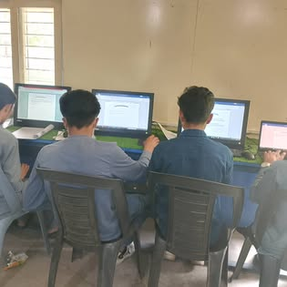
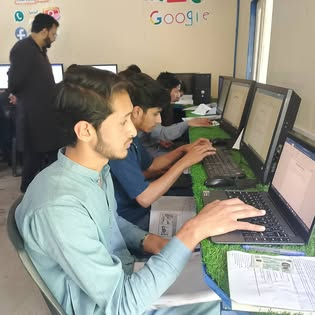
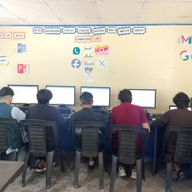
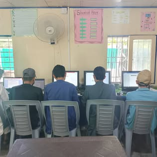
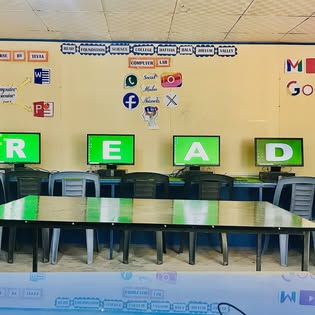
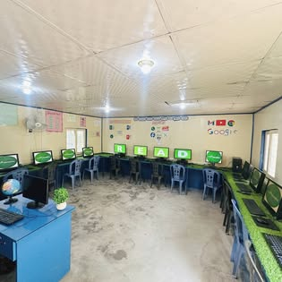
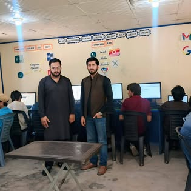

Academic Growth
Focused teaching and consistent assessment support strong learning habits.
Learning • Character • Service
READ Foundation Science College provides a focused learning environment where students grow through knowledge, discipline and opportunity.
READ Foundation Science College Hattian Bala is an educational institution serving students and families in the Jhelum Valley.
Our learning community values academic effort, confident communication, good character and responsible citizenship. We aim to help every student move forward with curiosity and purpose.
Focused teaching and consistent assessment support strong learning habits.
Respect, responsibility and integrity are part of everyday college life.
Activities help students explore their abilities beyond the classroom.

Classroom learning is strengthened through assessments, student activities and opportunities to take part in college life.
Our public updates share student learning, assessments and activities from across the college.

Students build confidence through active involvement in college activities.
Assessment and classroom engagement encourage students to keep improving.
Proudly serving learners in Upper Muhalla and the wider Jhelum Valley.





Contact the college for general information, admissions guidance or campus enquiries.
Call the collegeUpper Muhalla, Tehsil Hattian Bala,
District Jhelum Valley, Azad Kashmir